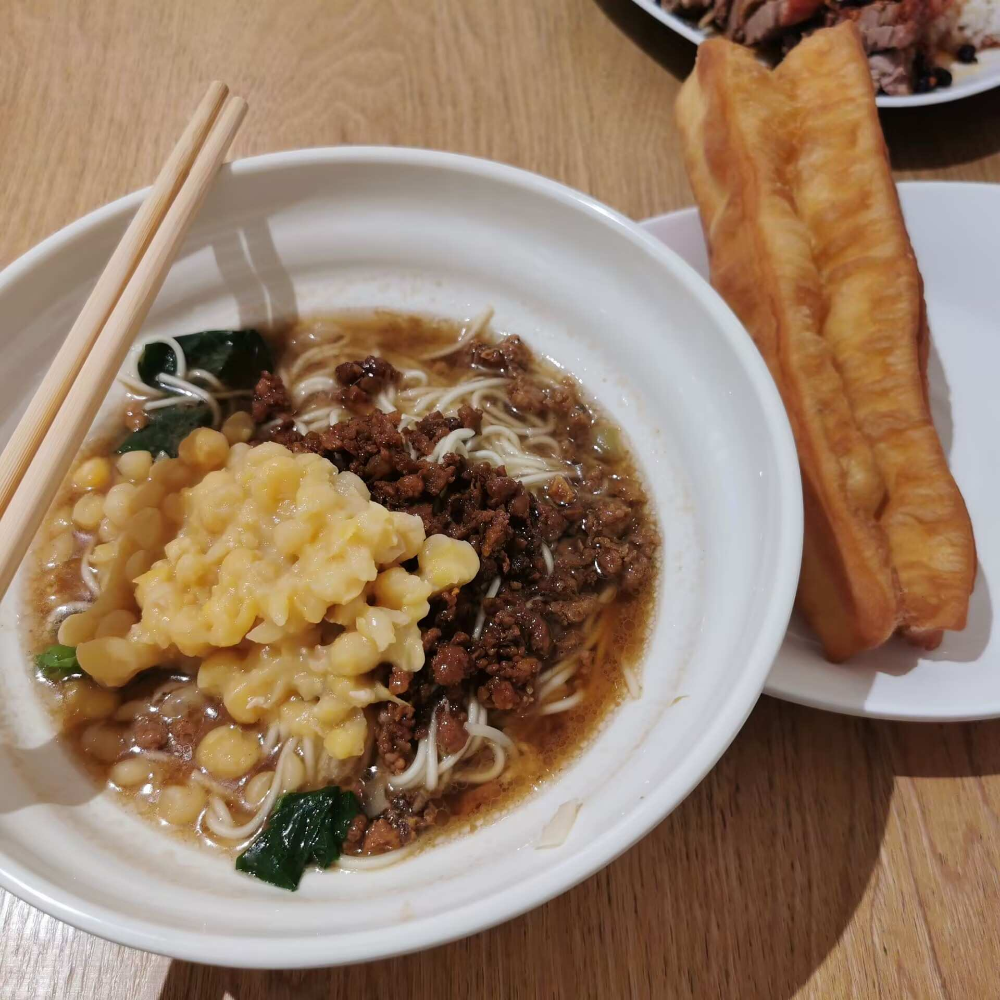
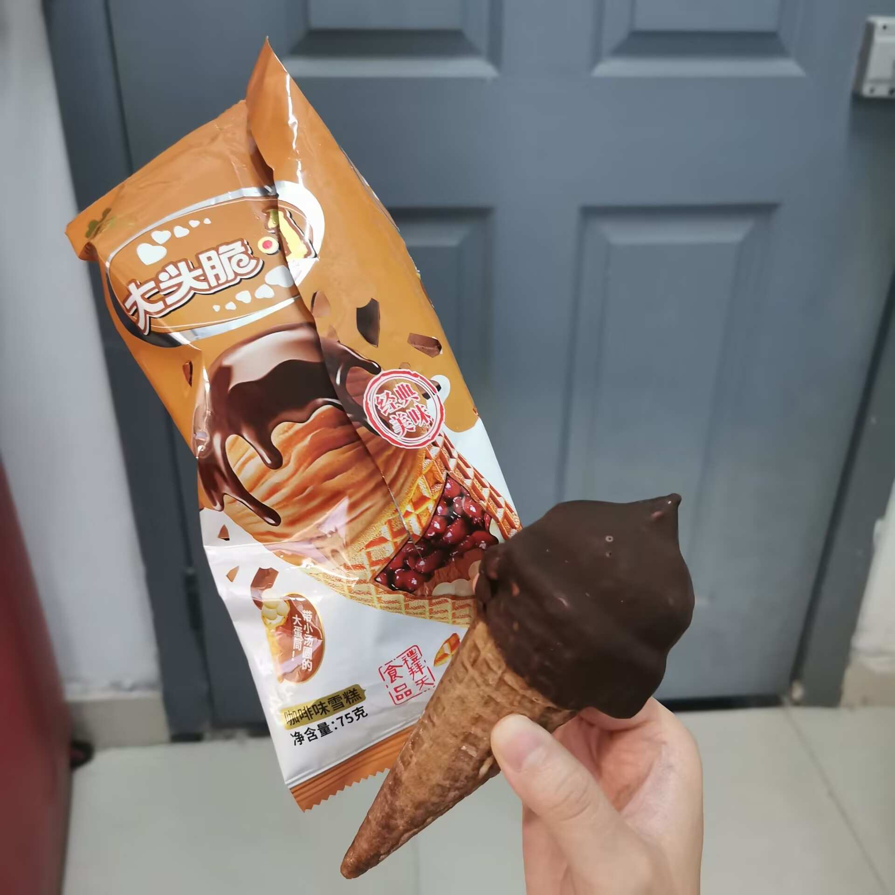
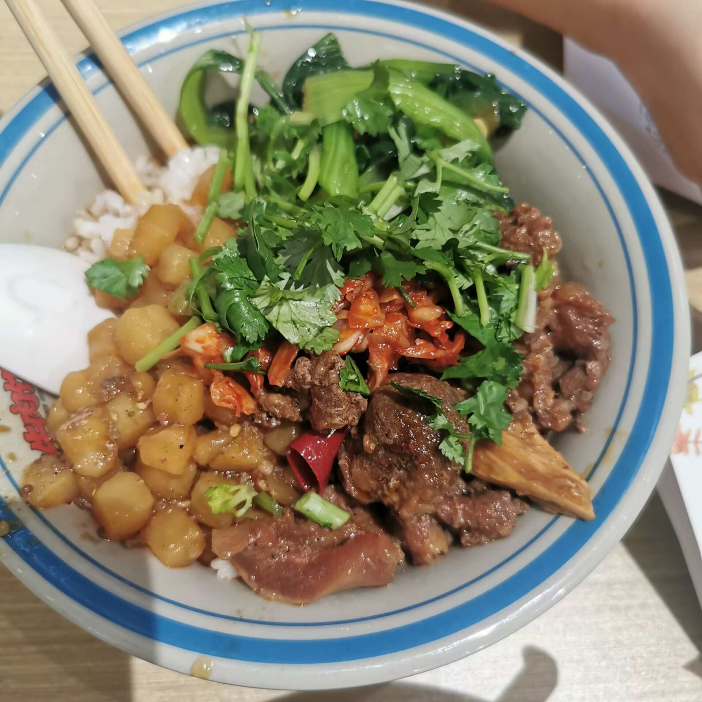
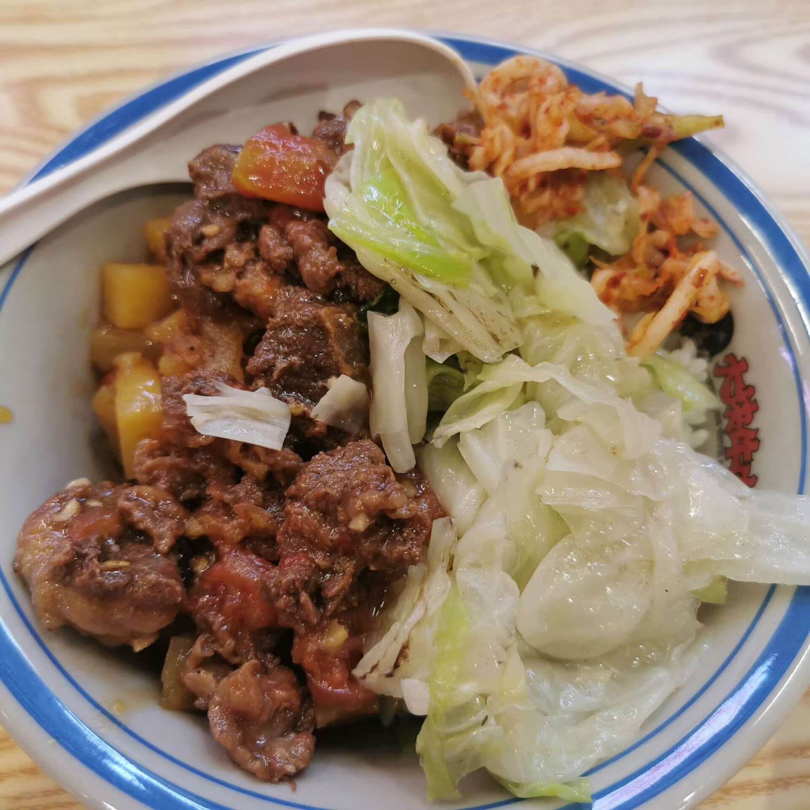
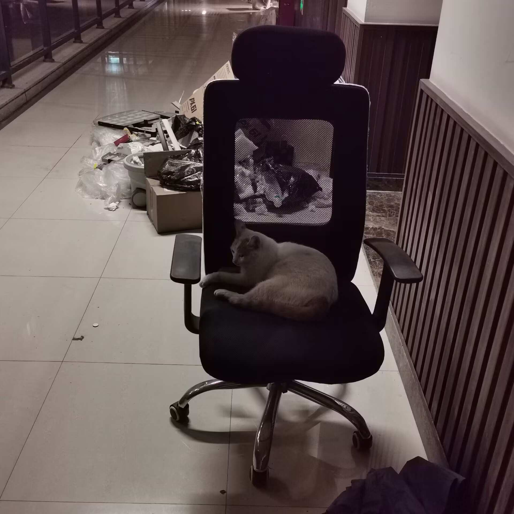
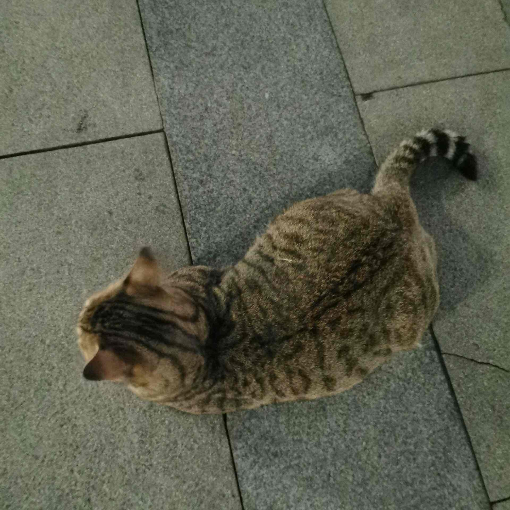
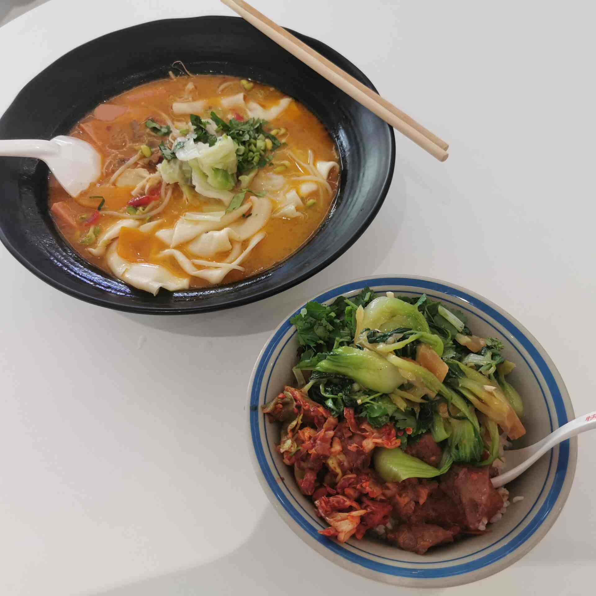
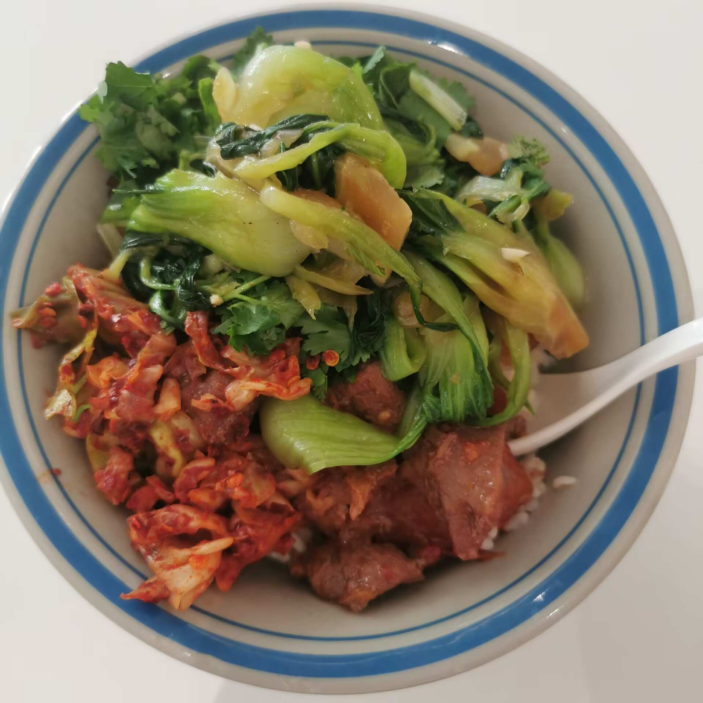

第一课堂：线上学习资料
教材推荐

本教材为中国新闻传播史课程料，便于学生自主研学和课堂讨论。

本教材为中国新闻传播史资料，便于学生自主研学和课堂讨论。

本教材为中国新闻传播考资料，便于学生自主研学和课堂讨论。
网络课程观摩

课程观摩示例1：讲解晚清报人的新闻思想与政治实践。

课程观摩示例2：分析“新报”论在近代新闻史中的意义。

课程观摩示例3：学生研讨与教师点评结合的课堂录像。
教学影片

教学影片示例1：晚清报刊历史影像资料解析。

教学影片示例2：学生实地调研视频展示。
教学影片示例3：课程专题讲座录像回顾。